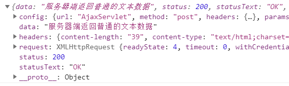

第二节 Axios基本用法0、在前端页面引入开发环境1、发送普通请求参数①前端代码②后端代码③axios程序接收到的响应对象结构④服务器端处理请求失败后2、发送请求体JSON①前端代码②后端代码[1]加入Gson包[2]Servlet代码3、服务器端返回JSON数据①前端代码②后端代码[1]加入Gson包[2]Servlet代码
第二节 Axios基本用法
0、在前端页面引入开发环境
<script type="text/javascript" src="/demo/static/vue.js"></script><script type="text/javascript" src="/demo/static/axios.min.js"></script>
1、发送普通请求参数
①前端代码
HTML标签：
xxxxxxxxxx <div id="app"> <button @click="commonParam">普通请求参数</button> </div>Vue+axios代码：
xxxxxxxxxxnew Vue({ "el":"#app", "data":{}, "methods":{ "commonParam":function () { axios({ "method":"post", "url":"/demo/AjaxServlet?method=commonParam", "params":{ "userName":"tom", "userPwd":"123456" } }).then(function (response) { console.log(response); }).catch(function (error) { console.log(error); }); } }});效果：所有请求参数都被放到URL地址后面了，哪怕我们现在用的是POST请求方式。

②后端代码
xpublic class AjaxServlet extends ModelBaseServlet { protected void commonParam(HttpServletRequest request, HttpServletResponse response) throws ServletException, IOException { String userName = request.getParameter("userName"); String userPwd = request.getParameter("userPwd"); System.out.println("userName = " + userName); System.out.println("userPwd = " + userPwd); response.setContentType("text/html;charset=UTF-8"); response.getWriter().write("服务器端返回普通文本字符串作为响应"); }}P.S.：由于我们不需要Thymeleaf了，所以ModelBaseServlet可以跳过ViewBaseServlet直接继承HttpServlet。
③axios程序接收到的响应对象结构

| 属性名 | 作用 |
|---|---|
| config | 调用axios(config对象)方法时传入的JSON对象 |
| data | 服务器端返回的响应体数据 |
| headers | 响应消息头 |
| request | 原生JavaScript执行Ajax操作时使用的XMLHttpRequest |
| status | 响应状态码 |
| statusText | 响应状态码的说明文本 |
④服务器端处理请求失败后
x
catch(function (error) { // catch()服务器端处理请求出错后，会调用 console.log(error); // error就是出错时服务器端返回的响应数据 console.log(error.response); // 在服务器端处理请求失败后，获取axios封装的JSON格式的响应数据对象 console.log(error.response.status); // 在服务器端处理请求失败后，获取响应状态码 console.log(error.response.statusText); // 在服务器端处理请求失败后，获取响应状态说明文本 console.log(error.response.data); // 在服务器端处理请求失败后，获取响应体数据});在给catch()函数传入的回调函数中，error对象封装了服务器端处理请求失败后相应的错误信息。其中，axios封装的响应数据对象，是error对象的response属性。response属性对象的结构如下图所示：

可以看到，response对象的结构还是和then()函数传入的回调函数中的response是一样的：

回调函数：开发人员声明，但是调用时交给系统来调用。像单击响应函数、then()、catch()里面传入的都是回调函数。回调函数是相对于普通函数来说的，普通函数就是开发人员自己声明，自己调用：
function sum(a, b) {return a+b;}var result = sum(3, 2);console.log("result="+result);
2、发送请求体JSON
①前端代码
HTML代码：
xxxxxxxxxx<button @click="requestBodyJSON">请求体JSON</button>Vue+axios代码：
x
……"methods":{ "requestBodyJSON":function () { axios({ "method":"post", "url":"/demo/AjaxServlet?method=requestBodyJSON", "data":{ "stuId": 55, "stuName": "tom", "subjectList": [ { "subjectName": "java", "subjectScore": 50.55 }, { "subjectName": "php", "subjectScore": 30.26 } ], "teacherMap": { "one": { "teacherName":"tom", "tearcherAge":23 }, "two": { "teacherName":"jerry", "tearcherAge":31 }, }, "school": { "schoolId": 23, "schoolName": "atguigu" } } }).then(function (response) { console.log(response); }).catch(function (error) { console.log(error); }); }}……效果：

P.S.：Chrome浏览器中将『请求负载』显示为英文：『Request Payload』。
②后端代码
[1]加入Gson包
Gson是Google研发的一款非常优秀的JSON数据解析和生成工具，它可以帮助我们将数据在JSON字符串和Java对象之间互相转换。

[2]Servlet代码
xxxxxxxxxxprotected void requestBodyJSON(HttpServletRequest request, HttpServletResponse response) throws ServletException, IOException { // 1.由于请求体数据有可能很大，所以Servlet标准在设计API的时候要求我们通过输入流来读取 BufferedReader reader = request.getReader(); // 2.创建StringBuilder对象来累加存储从请求体中读取到的每一行 StringBuilder builder = new StringBuilder(); // 3.声明临时变量 String bufferStr = null; // 4.循环读取 while((bufferStr = reader.readLine()) != null) { builder.append(bufferStr); } // 5.关闭流 reader.close(); // 6.累加的结果就是整个请求体 String requestBody = builder.toString(); // 7.创建Gson对象用于解析JSON字符串 Gson gson = new Gson(); // 8.将JSON字符串还原为Java对象 Student student = gson.fromJson(requestBody, Student.class); System.out.println("student = " + student); System.out.println("requestBody = " + requestBody); response.setContentType("text/html;charset=UTF-8"); response.getWriter().write("服务器端返回普通文本字符串作为响应");}P.S.：看着很麻烦是吧？别担心，将来我们有了SpringMVC之后，一个@RequestBody注解就能够搞定，非常方便！
3、服务器端返回JSON数据
①前端代码
xxxxxxxxxxaxios({ "method":"post", "url":"/demo/AjaxServlet?method=responseBodyJSON"}).then(function (response) { console.log(response);}).catch(function (error) { console.log(error);});then()中获取到的response在控制台打印效果如下：我们需要通过data属性获取响应体数据

②后端代码
[1]加入Gson包
仍然需要Gson支持，不用多说
[2]Servlet代码
x
protected void responseBodyJSON(HttpServletRequest request, HttpServletResponse response) throws ServletException, IOException { // 1.准备数据对象 Student student = new Student(); student.setStuId(10); student.setStuName("tom"); student.setSchool(new School(11,"atguigu")); student.setSubjectList(Arrays.asList(new Subject("java", 95.5), new Subject("php", 93.3))); Map<String, Teacher> teacherMap = new HashMap<>(); teacherMap.put("t1", new Teacher("lili", 25)); teacherMap.put("t2", new Teacher("mary", 26)); teacherMap.put("t3", new Teacher("katty", 27)); student.setTeacherMap(teacherMap); // 2.创建Gson对象 Gson gson = new Gson(); // 3.将Java对象转换为JSON对象 String json = gson.toJson(student); // 4.设置响应体的内容类型 response.setContentType("application/json;charset=UTF-8"); response.getWriter().write(json);}